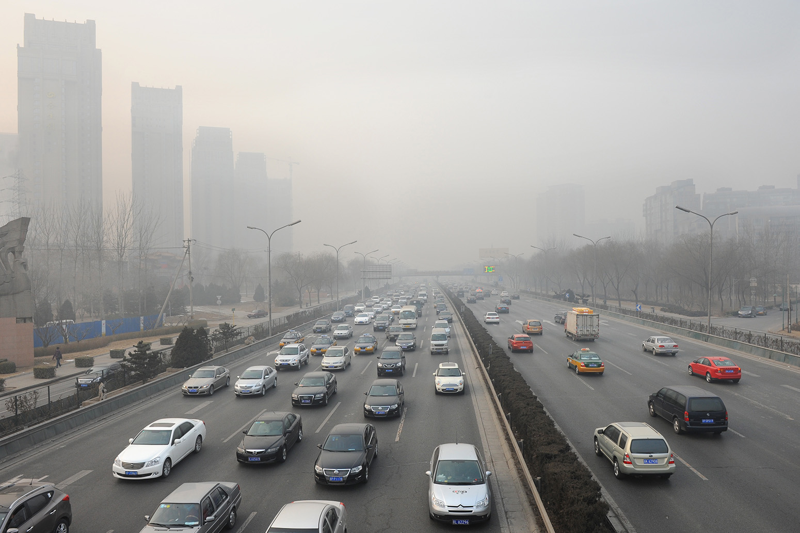

Causas de la contaminación
Nuestro planeta se encuentra expuesto a numerosos contaminantes que perjudican al bienestar y a la salud de los seres vivos que habitan en él.
La Organización de Naciones Unidas destaca como culpables de la contaminación y el efecto invernadero a las ciudades porque “ellas ocupan el 2% del territorio mundial y producen el 70% de estos gases”. Esta organización advierte que la situación podría empeorar porque muchos países están teniendo un crecimiento muy acelerado, como Brasil. China e India, y a su vez están emitiendo gases contaminantes.
La ONU considera que los principales perjudicados por el cambio climático serán los países más pobres a causa de su creciente población o por las reiteradas situaciones de inundación, desertificación y sequías que sufren.
Los contaminantes son sustancias, químicas o biológicas, en forma de energía térmica, radiaciones o ruido que se adhieren o entran en contacto con el aire, el suelo o el agua afectando a su composición y causando daños en el medio en que habitan animales, vegetales y el hombre.
Las principales causas de la contaminación son:
• El tráfico rodado: los coches y camiones son los mayores contaminantes urbanos porque a diario circulan arrojando al aire gases tóxicos perjudiciales para la salud. Estos vehículos contaminan a causa de la combustión de los hidrocarburos que utilizan para moverse, y el desgaste de los frenos y ruedas.
• En las ciudades existe otra fuente de contaminación como son las construcciones y las demoliciones: estas actividades desprenden polvos y gases que dañan el aire de la zona en que se desarrollan, y a su vez contaminan el agua donde arrojan sus desechos.
• Los Combustibles fósiles: el confort y el bienestar de los habitantes de las grandes ciudades trajo como consecuencia el aumento en el consumo de combustibles fósiles. La producción de carbón, de petróleo y de gas natural crece de la mano del ascenso de los niveles de contaminación del aire, del suelo y del agua del planeta.
• El índice de población mundial ha crecido a distinto ritmo que la tasa de mortalidad, hecho que ha impactado sobre el medioambiente: provocando la ineficiencia en el tratamiento de las aguas residuales domésticas, el aumento del consumo irreflexivo y la generación de toneladas de basura.
• El progreso tecnológico beneficia a nivel económico y social, pero la proliferación de industrias y la falta de control ambiental en sus procesos, ha perjudicado el ecosistema por la gran cantidad de residuos arrojados al aire, en ríos y mares.
• La deforestación: la tala indiscriminada en bosques y selvas impide que los árboles, encargados de purificar el aire, realicen esta tarea y que miles de animales y plantas se extingan por no tener un lugar donde vivir y crecer.
• Los pesticidas y los productos químicos utilizados en los cultivos llegan a contaminar el suelo y el agua de la zona en que se sembró. Llegando incluso a contaminar, de forma alarmante, a muchos alimentos.
